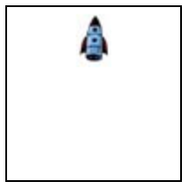

2 Programmierer entwerfen Sprachen!
Dieser Teil des Skripts basiert auf [HTDP/2e] Kapitel 1
Die Programme, die Sie bisher geschrieben haben, waren im Wesentlichen
Berechnungen, wie man sie auch auf einem Taschenrechner durchführen könnte —
Eine echte Programmiersprache unterscheidet sich von einem Taschenrechner dadurch, dass Sie selber, auf Basis der bereits bestehenden Funktionen, neue Funktionen definieren können und diese danach in Ausdrücken und Definitionen neuer Funktionen benutzen können. Im Allgemeinen können Sie Namen definieren und damit das Vokabular, welches Ihnen (und, bei Veröffentlichung ihrer Programme, auch anderen) zur Verfügung steht, selber erweitern. Ein Programm ist also mehr als eine Menge von Maschineninstruktionen - es definiert auch eine Sprache für die Domäne des Programms. Sie werden sehen, dass die Möglichkeit, neue Namen zu definieren, das Schlüsselkonzept ist, um mit der Komplexität großer Softwaresysteme umzugehen.
2.1 Funktionsdefinitionen
Hier ist die Definition einer Funktion die den Durchschnitt von zwei Zahlen berechnet.
Wenn diese Funktionsdefinition in den Definitionsbereich geschrieben und dann auf "Start" gedrückt wird,
passiert —
> (average 12 17) 14.5
> (average 100 200) 150
Diese Werte hätten natürlich auch ohne die vorherige Funktionsdefinition berechnet werden können:
> (/ (+ 12 17) 2) 14.5
> (/ (+ 100 200) 2) 150
Allerdings sehen wir, dass die zweite Variante redundant ist: Der Algorithmus zur Berechnung des Durchschnitts wurde zweimal repliziert. Sie ist auch weniger abstrakt und weniger leicht verständlich, denn wir müssen erst verstehen, dass der Algorithmus den Durchschnitt zweier Zahlen berechnet, während wir in der ersten Version dem Algorithmus einen Namen gegeben haben, der die Details des Algorithmus verbirgt.
Gute Programmierer versuchen im Allgemeinen, jede Art von Redundanz in Programmen zu vermeiden. Dies wird manchmal als das DRY (Don’t repeat yourself) Prinzip bezeichnet. Der Grund dafür ist nicht nur, dass man Schreibarbeit spart, sondern auch dass redundante Programme schwerer zu verstehen und zu warten sind: Wenn ich einen Algorithmus später ändern möchte, so muss ich in einem redundanten Programm erst alle Kopien dieses Algorithmus finden und jede davon ändern. Daher ist Programmieren niemals eine monotone repetitive Tätigkeit, denn wiederkehrende Muster können in Funktionsdefinitionen (und anderen Formen der Abstraktion die sie noch kennenlernen werden) gekapselt und wiederverwendet werden.
Im allgemeinen Fall haben Funktionsdefinitionen diese Form:
(define (FunctionName InputName1 InputName2 ...) BodyExpression)
Funktionsdefinitionen sind keine Ausdrücke sondern eine neue Kategorie von Programmen. Funktionsdefinitionen dürfen also beispielsweise nicht als Argument von Funktionen verwendet werden. Eine Funktionsdefinition startet mit dem Schlüsselwort define. Der einzige Zweck dieses Schlüsselworts ist der, Funktionsdefinitionen von Ausdrücken unterscheiden zu können. Insbesondere darf es also keine Funktionen geben, die define heißen. FunctionName ist der Name der Funktion. Diesen benötigt man, um die Funktion in Ausdrücken benutzen (oder: aufrufen) zu können. InputName1, InputName2 und so weiter sind die Parameter der Funktion. Die Parameter repräsentieren die Eingabe der Funktion, die erst bekannt wird wenn die Funktion aufgerufen wird. Die BodyExpression ist ein Ausdruck der die Ausgabe der Funktion definiert. Innerhalb der BodyExpression werden in der Regel die Parameter der Funktion benutzt. Wir nennen BodyExpression die Implementation der Funktion oder den Body der Funktion.
Funktionsaufrufe haben die Form:
(FunctionName ArgumentExpression1 ArgumentExpression1 ...)
Ein Funktionsaufruf einer mit define definierten (benutzerdefinierten) Funktion sieht also genau so aus wie das Benutzen einer fest eingebauten (primitiven) Funktion. Dies ist kein Zufall. Dadurch, dass man nicht sehen kann, ob man gerade eine primitive Funktion oder eine benutzerdefinierte Funktion aufruft, ist es leichter, die Programmiersprache selber zu erweitern oder zu verändern. Zum Beispiel kann aus einer primitiven Funktion eine benutzerdefinierte Funktion gemacht werden, oder ein Programmierer kann Erweiterungen definieren die so aussehen, als wäre die Sprache um primitive Funktionen erweitert worden.
2.2 Funktionen die Bilder produzieren
(place-image 50 20 (empty-scene 100 100))
(place-image 50 40 (empty-scene 100 100))
(place-image 50 60 (empty-scene 100 100))
die Bilder


Offensichtlich sind diese drei Ausdrücke zusammen redundant, denn sie unterscheiden sich nur in dem Parameter für die Höhe der Rakete. Mit einer Funktionsdefinition können wir das Muster, welches diese drei Ausdrücke gemein haben, ausdrücken:
(define (create-rocket-scene height) (place-image 50 height (empty-scene 100 100)))
Die drei Bilder können nun durch Aufrufe der Funktion erzeugt werden.
> (create-rocket-scene 20) 
> (create-rocket-scene 40)
> (create-rocket-scene 60)

Sie können den Höhenparameter auch als Zeitparameter auffassen; die Funktion bildet also Zeitpunkte auf Bilder ab. Solche Funktionen können wir auch als Film oder Animation auffassen, denn ein Film ist dadurch charakterisiert, dass es zu jedem Zeitpunkt ein dazugehöriges Bild gibt.
Ein Teachpack ist eine Bibliothek mit Funktionen, die sie in ihrem Programm verwenden können. Sie können ein Teachpack aktivieren, indem Sie (require 2htdp/universe) an den Anfang Ihrer Datei hinzufügen.
(animate create-rocket-scence)
bewirkt, dass ein neues Fenster geöffnet wird in dem eine Animation zu sehen ist, die zeigt, wie sich die Rakete von oben nach unten bewegt und schließlich verschwindet. Wenn sie das Fenster schließen wird eine Zahl im Interaktionsbereich angezeigt; diese Zahl steht für die aktuelle Höhe der Rakete zu dem Zeitpunkt als das Fenster geschlossen wurde.
Die animate Funktion bewirkt folgendes: Eine Stoppuhr wird mit dem Wert 0 initialisiert; 28 mal pro Sekunde wird der Zählerwert um eins erhöht. Jedesmal wenn der Zähler um eins erhöht wird, wird die Funktion create-rocket-scene ausgewertet und das resultierende Bild in dem Fenster angezeigt.
2.3 Bedeutung von Funktionsdefinitionen
Um die Bedeutung von Funktionsdefinitionen zu definieren, müssen wir sagen, wie Funktionsdefinitionen und Funktionsaufrufe ausgewertet werden. Durch Funktionsdefinitionen können Ausdrücke nicht mehr isoliert (ohne Berücksichtigung des Rests des Programms) ausgewertet werden; sie werden im Kontext einer Menge von Funktionsdefinitionen ausgewertet. Dieser Kontext umfasst die Menge aller Funktionsdefinitionen, die im Programmtext vor dem auszuwertenden Ausdruck stehen. Um unsere formale Notation nicht unnötig schwergewichtig zu machen, werden wir diesen Kontext nicht explizit zur Reduktionsrelation hinzufügen; stattdessen gehen wir einfach davon aus, dass es einen globalen Kontext mit einer Menge von Funktionsdefinitionen gibt.
Falls der Ausdruck die Form (f v1 ... vn) hat und f eine primitive (eingebaute) Funktion ist und die Anwendung von f auf v1,...,vn den Wert v ergibt, dann (f v1 ... vn) → v.
- Falls der Ausdruck die Form (f v1 ... vn) hat und f keine primitive Funktion ist und der Kontext die Funktionsdefinitionenthält, dann (f v1 ... vn) → NewBody, wobei NewBody aus BodyExpression entsteht, indem man alle Vorkommen von xi durch vi ersetzt (für i=1...n).
Beispiel: Unser Programm enthält folgende Funktionsdefinitionen.
(define (g y z) (+ (f y) y (f z))) (define (f x) (* x 2))
Dann (g (+ 2 3) 4) → (g 5 4) → (+ (f 5) 5 (f 4)) → (+ (* 5 2) 5 (f 4)) → (+ 10 5 (f 4)) → (+ 10 5 8) → 23
Beachten Sie, dass während der gesamten Reduktion der Kontext sowohl f als auch g enthält, daher ist ist kein Problem, dass im Body von g die Funktion f aufgerufen wird, obwohl f erst nach g definiert wird. Die Auswertung des Programms
2.4 Konditionale Ausdrücke
In der Animation aus dem letzten Abschnitt verschwindet die Rakete einfach irgendwann nach unten aus dem Bild. Wie können wir es erreichen, dass die Rakete stattdessen auf dem Boden der Szene "landet"?
2.4.1 Motivation
Offensichtlich benötigen wir hierzu in unserem Programm eine Fallunterscheidung. Fallunterscheidungen kennen sie aus zahlreichen Beispielen des realen Lebens. Beispielsweise ist das Bewertungsschema für eine Klausur, welches jeder Punktzahl eine Note zuordnet, eine Funktion die die unterschiedlichen Grenzen für die resultierenden Noten voneinander unterscheidet. In BSL können wir ein Notenschema, bei dem man mindestens 90 Punkte für eine 1 benötigt und alle 10 Punkte darunter eine Note heruntergegangen wird, wie folgt definieren:
(define (note punkte) (cond [(>= punkte 90) 1] [(>= punkte 80) 2] [(>= punkte 70) 3] [(>= punkte 60) 4] [(>= punkte 50) 5] [(< punkte 50) 6]))
> (note 95) 1
> (note 73) 3
> (note 24) 6
2.4.2 Bedeutung konditionaler Ausdrücke
Im allgemeinen Fall sieht ein konditionaler Ausdruck wie folgt aus:
(cond [ConditionExpression1 ResultExpression1] [ConditionExpression2 ResultExpression2] .... [ConditionexpressionN ResultExpressionN])
Ein konditionaler Ausdruck startet also mit einer öffnenden Klammer und dem Schlüsselwort cond. Danach folgen beliebig viele Zeilen, von denen jede zwei Ausdrücke beinhaltet. Der linke Ausdruck wird die Bedingung oder Kondition und der rechte das Resultat genannt.
Ein cond Ausdruck wird wie folgt ausgewertet. DrRacket wertet zunächst die erste Bedingung
ConditionExpression1 aus. Ergibt diese Auswertung den Wert #true, so ist der Wert
des gesamten cond Ausdrucks der Wert von ResultExpression1. Ergibt diese Auswertung
hingegen den Wert #false, so wird mit der zweiten Zeile fortgefahren und genau so verfahren
wie mit der ersten Zeile. Wenn es keine nächste Zeile mehr gibt —
> (cond [(< 5 3) 77] [(> 2 9) 88]) cond: all question results were false
> (cond [(+ 2 3) 4]) cond: question result is not true or false: 5
Die Reduktionsregeln für BSL müssen wir zur Berücksichtigung konditionaler Audrücke um folgende beiden Regeln ergänzen:
(cond [#false e] [e2 e3] .... [en-1 en]) → (cond [e2 e3] .... [en-1 en])
und
(cond [#true e] [e2 e3] .... [en-1 en]) → e
Außerdem ergänzen wir die Auswertungspositionen, die in der Kongruenzregel verwendet werden können wie folgt: In einem Ausdruck der Form
(cond [e0 e1] [e2 e3] .... [en-1 en])
ist der Ausdruck e0 in einer Auswertungsposition, aber nicht e1,...,en .
Beispiel: Betrachten wir den Aufruf (note 83) in dem Beispiel oben. Dann (note 83) → (cond [(>= 83 90) 1] [(>= 83 80) 2] ...) → (cond [#false 1] [(>= 83 80) 2] ...) → (cond [(>= 83 80) 2] ...) → (cond [#true 2] ...) → 2
2.4.3 Beispiel
Zurück zu unserer Rakete. Offensichtlich müssen wir hier zwei Fälle unterscheiden. Während die Rakete noch oberhalb des Bodens der Szene ist, soll sie wie gehabt sinken. Wenn die Rakete allerdings bereits auf dem Boden angekommen ist, soll die Rakete nicht mehr weiter sinken.
Da die Szene 100 Pixel hoch ist, können wir die Fälle unterscheiden, dass die aktuelle Höhe kleiner oder gleich 100 ist und dass die aktuelle Höhe größer als 100 ist.
Für die Varianten der create-rocket-scence Funktion verwenden wir die Namenskonvention dass wir den Varianten die Suffixe -v2, -v3 usw. geben.
(define (create-rocket-scene-v2 height) (cond [(<= height 100) (place-image 50 height (empty-scene 100 100))]
[(> height 100) (place-image 50 100 (empty-scene 100 100))]))
2.4.4 Etwas syntaktischer Zucker...
Zwei Spezialfälle konditionaler Ausdrücke sind so häufig, dass es in BSL eine eigene Syntax dafür gibt, die für diese Spezialfälle optimiert ist.
Der erste Spezialfall ist der, dass man einen Zweig der Kondition haben möchte, der immer dann genommen wird, wenn alle anderen Zweige nicht anwendbar sind. In diesem Fall kann man statt der Kondition das Schlüsselword else verwenden. Das Beispiel von oben könnten wir daher auch so formulieren:
(define (note punkte) (cond [(>= punkte 90) 1] [(>= punkte 80) 2] [(>= punkte 70) 3] [(>= punkte 60) 4] [(>= punkte 50) 5] [else 6]))
Die else Klausel darf allerdings nur im letzten Zweig eines cond Ausdrucks verwendet werden:
> (cond [(> 3 2) 5] [else 7] [(< 2 1) 13]) cond: found an else clause that isn't the last clause in its cond expression
Der else Zweig ist äquivalent zu einem Zweig mit der immer erfüllten Bedingung #true, daher ist im allgemeinen Fall die Bedeutung von
(cond [e0 e1] [e2 e3] .... [else en])
definiert als die Bedeutung von
(cond [e0 e1] [e2 e3] .... [#true en])
Wir geben also in diesem Fall keine Reduktionsregeln für dieses Sprachkonstrukt an, sondern stattdessen eine Transformation, die die Bedeutung transformiert. Wenn Sprachkonstrukte "nichts Neues" hinzufügen sondern lediglich eine Abkürzung für eine bestimmte Benutzung bestehender Sprachkonstrukte sind, so nennt man solche Sprachkonstrukte auch syntaktischen Zucker.
Ein anderer Spezialfall konditionaler Ausdrücke ist der, dass es nur eine Bedingung gibt, die überprüft werden soll, und je nachdem ob diese Bedingung wahr oder falsch ist soll ein anderer Ausdruck ausgewählt werden. Für diesen Fall gibt es das if Konstrukt.
Beispiel:
> (aggregatzustand -5) "gefroren"
Im Allgemeinen hat ein if Ausdruck folgende Form:
(if CondExpression ThenExpression ElseExpression)
Ein if Ausdruck ist syntaktischer Zucker; die Bedeutung wird durch die Transformation in diesen Ausdruck festgelegt:
(cond [CondExpression ThenExpression] [else ElseExpression])
Im Allgemeinen eignet sich if für Situationen, in denen wir so etwas wie "entweder das eine oder das andere" sagen wollen. Die cond Ausdrücke eignen sich dann, wenn man mehr als zwei Situationen unterscheiden möchten.
Obwohl es zunächst so aussieht, als sei if ein Spezialfall von cond, kann man allerdings auch jeden cond Ausdruck durch einen geschachtelten if Ausdruck ersetzen. Beispielsweise kann die Funktion von oben auch so geschrieben werden:
(define (note punkte) (if (>= punkte 90) 1 (if (>= punkte 80) 2 (if (>= punkte 70) 3 (if (>= punkte 60) 4 (if (>= punkte 50) 5 6))))))
In solchen Fällen ist offensichtlich das cond Konstrukt besser geeignet, weil man keine tief geschachtelten Ausdrücke benötigt. Dennoch kann man festhalten, dass cond und if gleichmächtig sind, weil das eine in das andere so transformiert werden kann, dass die Bedeutung gleich bleibt.
2.4.5 Auswertung konditionaler Ausdrücke
In Bedeutung konditionaler Ausdrücke haben wir definiert, dass in einem konditionalen Ausdruck
(cond [e0 e1] [e2 e3] .... [en-1 en])
nur der Ausdruck e0 in einer Auswertungsposition ist, aber nicht e1,...,en . Wieso diese Einschränkung —
(cond [(= 5 7) (/ 1 0)] [(= 3 3) 42] [(/ 1 0) 17])
Gemäß unserer Auswertungsregeln gilt:
(cond [(= 5 7) (/ 1 0)] [(= 3 3) 42] [(/ 1 0) 17])
→
(cond [#false (/ 1 0)] [(= 3 3) 42] [(/ 1 0) 17])
→
(cond [(= 3 3) 42] [(/ 1 0) 17])
→
(cond [#true 42] [(/ 1 0) 17])
→
42
Wenn es erlaubt wäre, auch auf den anderen Positionen auszuwerten, müssten wir gemäß unserer Regeln die Berechnung in dem Beispiel mit einem Fehler abbrechen, sobald wir einen der (/ 1 0) Ausdrücke auswerten. Gemäß der Terminologie aus Bedeutung von BSL Ausdrücken geht uns die Konfluenz-Eigenschaft verloren und der Wert eines Ausdrucks ist nicht mehr eindeutig.
Das Beispiel oben ist sehr künstlich, aber wir werden später sehen, dass konditionale Ausdrücke häufig verwendet werden, um sicherzustellen, dass eine Funktion terminiert – die Auswertung also nicht endlos andauert. Dafür ist es essentiell, dass nicht auf allen Positionen ausgewertet werden darf. Operatoren wie cond, bei denen die Auswertung beliebiger Argumente nicht erlaubt ist, nennt man auch nicht-strikt. Normale Funktionen, bei deren Aufruf alle Argumente ausgewertet werden bevor die Funktion angewendet wird, nennt man hingegen strikt.
2.4.6 In der Kürze liegt die Würze
Aus der Bedeutung konditionaler Ausdrücke können wir eine Reihe von Refactorings herleiten, die verwendet werden können (und sollten), um konditionale Ausdrücke zu vereinfachen. Unnötig lange Ausdrücke sind auch ein Verstoss gegen das DRY-Prinzip, denn auch diese sind eine Form von Redundanz. Bezüglich der Refactorings, die aus einem konditionalen Ausdruck einen boolschen Ausdruck machen, werden wir später (Bedeutung von BSL) sehen, dass diese Refactorings auch bezüglich des Striktheitsverhaltens übereinstimmen.
Ausdruck |
|
|
| Vereinfachter Ausdruck |
| Bedingung |
(if e #true #false) |
| ≡ |
| e |
| e ≡ #true oder e ≡ #false |
(if e #false #true) |
| ≡ |
| (not e) |
| – |
(if e e #false) |
| ≡ |
| e |
| e ≡ #true oder e ≡ #false |
| ≡ |
| (if e-1 e-3 e-2) |
| – | |
(if e-1 #true e-2) |
| ≡ |
| (or e-1 e-2) |
| e-2 ≡ #true oder e-2 ≡ #false |
(if e-1 e-2 #false) |
| ≡ |
| (and e-1 e-2) |
| e-2 ≡ #true oder e-2 ≡ #false |
| ≡ |
|
| – |
Ein Beispiel für das letzte Refactoring werden wir in DRY Redux diskutieren. Später werden wir zeigen, wie man die Korrektheit dieser Refactorings beweisen kann. Informell können Sie die Äquivalenzen nachvollziehen, wenn Sie einfach mal die möglichen Fälle durchspielen und Ausdrücke durch #true oder #false ersetzen.
2.5 Definition von Konstanten
Wenn wir uns (animate create-rocket-scene-v2) anschauen, stellen wir fest, dass die Animation noch immer nicht befriedigend ist, denn die Rakete versinkt halb im Boden. Der Grund dafür ist, dass place-image das Zentrum des Bildes an dem vorgegebenen Punkt plaziert. Damit die Rakete sauber auf dem Boden landet, muss das Zentrum also überhalb des Bodens sein. Mit etwas Überlegung wird schnell klar, dass die Rakete nur bis zu der Höhe
(- 100 (/ (image-height
) 2))
absinken sollte. Das bedeutet, dass wir unsere create-rocket-scene-v2 Funktion wie folgt modifizieren müssen:
(define (create-rocket-scene-v3 height) (cond [(<= height (- 100 (/ (image-height ) 2)))
(place-image 50 height (empty-scene 100 100))]
[(> height (- 100 (/ (image-height ) 2)))
(place-image 50 (- 100 (/ (image-height
) 2))
(empty-scene 100 100))]))
2.6 DRY: Don’t Repeat Yourself!
Ein Aufruf von (animate create-rocket-scene-v3) illustriert, dass die Rakete nun wie von uns gewünscht landet.
Allerdings ist offensichtlich, dass create-rocket-scene-v3 gegen das im Abschnitt Funktionsdefinitionen angesprochene Prinzip
verstößt, dass gute Programme keine Redundanz enthalten. Im Programmiererjargon wird dieses Prinzip auch häufig
DRY-Prinzip —
2.6.1 DRY durch Konstantendefinitionen
Konstante Werte wie 100 in Programmtexten werden von Programmierern häufig abfällig als magic numbers bezeichnet.
Idealerweise sollte die Beziehung zwischen den Anforderungen an ein Programm und dem Programmtext stetig sein: Ein kleiner Änderungswunsch an den Anforderungen für ein Programm sollte auch nur eine kleine Änderung am Programmtext erfordern. In unserem konkreten Beispiel können wir dieses Problem mit define lösen. Mit define können nämlich nicht nur Funktionen, sondern auch Konstanten definiert werden. Beispielsweise können wir in unser Programm diese Definition hineinschreiben:
Für die Bedeutung des Programms spielt es keine Rolle dass der Name der Konstanten nur aus Großbuchstaben besteht. Dies ist lediglich eine Namenskonvention, anhand derer Programmierer leicht erkennen können, welche Namen sich auf Konstanten beziehen.
(define HEIGHT 100)
Die Bedeutung einer solchen Definition ist, dass im Rest des Programms HEIGHT ein gültiger Ausdruck ist, der bei Auswertung den Wert 100 hat. Wenn wir im Programm alle Vorkommen von 100, die für die Höhe stehen, durch HEIGHT ersetzen, und das gleiche für WIDTH machen, erhalten wir diese Variante von create-rocket-scene:
(define WIDTH 100) (define HEIGHT 100) (define (create-rocket-scene-v4 height) (cond [(<= height (- HEIGHT (/ (image-height ) 2)))
(place-image 50 height (empty-scene WIDTH HEIGHT))]
[(> height (- HEIGHT (/ (image-height ) 2)))
(place-image 50 (- HEIGHT (/ (image-height
) 2))
(empty-scene WIDTH HEIGHT))]))
Testen Sie durch (animate create-rocket-scene-v4) dass das Programm weiterhin funktioniert. Experimentieren Sie mit anderen Werten für WIDTH und HEIGHT um zu sehen, dass diese kleine Änderung wirklich genügt um die Größe der Szene zu ändern.
Im Programmiererjargon nennen sich Programmänderungen, die die Struktur des Programms verändern ohne sein Verhalten zu verändern, Refactorings. Häufig werden Refactorings durchgeführt um die Wartbarkeit, Lesbarkeit, oder Erweiterbarkeit des Programms zu verbessern. In unserem Fall haben wir sowohl Wartbarkeit als auch Lesbarkeit durch dieses Refactoring verbessert. Die verbesserte Wartbarkeit haben wir bereits illustriert; die verbesserte Lesbarkeit rührt daher, dass wir an Namen wie WIDTH die Bedeutung der Konstanten ablesen können, während wir bei magic numbers wie 100 diese Bedeutung erst durch genaue Analyse des Programms herausfinden müssen (im Programmiererjargon auch reverse engineering genannt).
Es spielt übrigens keine Rolle, ob die Definitionen der Konstanten oberhalb oder unterhalb der create-rocket-scene Definition stehen. Die Konstanten sind innerhalb der gesamten Programmdatei sichtbar. Man sagt, die Konstanten haben globalen Scope. Um die Definitionen der Konstanten nicht im Programmtext suchen zu müssen, ist es sinnvoll, diese immer an der gleichen Stelle zu definieren. In vielen Programmiersprachen gibt es die Konvention, dass Konstantendefinitionen immer am Anfang des Programmtextes stehen, daher werden auch wir uns an diese Konvention halten.
Allerdings verstößt create-rocket-scene-v4 immer noch gegen das DRY-Prinzip. Beispielsweise kommt der Ausdruck
(- HEIGHT (/ (image-height
) 2))
mehrfach vor. Diese Redundanz kann ebenfalls mit define beseitigt werden, denn der Wert, mit dem eine Konstante belegt wird, kann durch einen beliebig komplexen Ausdruck beschrieben werden. Im Allgemeinen haben Konstantendefinitionen die folgende Form:
(define CONSTANTNAME CONSTANTExpression)
Im vorherigen Beispiel können wir die Konstante zum Beispiel ROCKET-CENTER-TO-BOTTOM nennen. Beachten Sie, wie durch die Wahl guter Namen die Bedeutung des Programms viel offensichtlicher wird. Ohne diesen Namen müssten wir jedesmal, wenn wir den komplexen Ausdruck oben lesen und verstehen wollen, wieder herausfinden, dass hier die gewünschte Distanz des Zentrums der Rakete zum Boden berechnet wird.
In der Tradition der Familie von Programmiersprachen, aus der BSL stammt, ist es üblich, die englische Aussprache der Buchstaben des Alphabets zu verwenden um Namen abzukürzen. MTSCN spricht man daher "empty scene".
Auch die Zahl 50 im Programmtext ist eine magic number, allerdings hat sie eine andere Qualität als WIDTH und HEIGHT: Sie ist nämlich abhängig von dem Wert anderer Konstanten, in diesem Fall WIDTH. Da diese Konstante für die horizontale Mitte steht, definieren wir sie als (define MIDDLE (/ WIDTH 2)).
Die letzte Art der Redundanz, die nun noch vorkommt, ist, dass die Rakete selber mehrfach im Programmtext vorkommt. Die Rakete ist zwar kein Zahlenliteral
und daher keine magic number, aber ein magic image —
(define WIDTH 100) (define HEIGHT 100) (define MIDDLE (/ WIDTH 2)) (define MTSCN (empty-scene WIDTH HEIGHT)) (define ROCKET )
(define ROCKET-CENTER-TO-BOTTOM (- HEIGHT (/ (image-height ROCKET) 2))) (define (create-rocket-scene-v5 height) (cond [(<= height ROCKET-CENTER-TO-BOTTOM) (place-image ROCKET MIDDLE height MTSCN)] [(> height ROCKET-CENTER-TO-BOTTOM) (place-image ROCKET MIDDLE ROCKET-CENTER-TO-BOTTOM MTSCN)]))
2.6.2 DRY Redux
Halt! Auch create-rocket-scene-v5 verstößt noch gegen das DRY-Prinzip. Allerdings werden wir die verbliebenen Redundanzen nicht durch Funktions- oder Konstantendefinitionen eliminieren.
Eine Redundanz ist die, dass die Kondition (> height ROCKET-CENTER-TO-BOTTOM) genau dann wahr ist wenn (<= height ROCKET-CENTER-TO-BOTTOM) falsch ist. Diese Information steht jedoch nicht direkt im Programmtext; stattdessen wird die Kondition wiederholt und negiert. Eine Möglichkeit wäre, eine Funktion zu schreiben, die diese Kondition abhängig vom height Parameter berechnet und diese Funktion dann in beiden Zweigen der Kondition aufzurufen (und einmal zu negieren). In diesem Fall bietet sich allerdings eine einfachere Lösung an, nämlich statt cond if zu verwenden. Damit können wir diese Redundanz eliminieren:
(define WIDTH 100) (define HEIGHT 100) (define MIDDLE (/ WIDTH 2)) (define MTSCN (empty-scene WIDTH HEIGHT)) (define ROCKET )
(define ROCKET-CENTER-TO-BOTTOM (- HEIGHT (/ (image-height ROCKET) 2))) (define (create-rocket-scene-v6 height) (if (<= height ROCKET-CENTER-TO-BOTTOM) (place-image ROCKET MIDDLE height MTSCN) (place-image ROCKET MIDDLE ROCKET-CENTER-TO-BOTTOM MTSCN)))
Die letzte Redundanz, die wir in create-rocket-scene-v6 eliminieren wollen, ist die, dass die beiden Aufrufe von place-image bis auf einen Parameter identisch sind. Falls in einem konditionalen Ausdruck die Bodies aller Zweige bis auf einen Unterausdruck identisch sind, können wir die Kondition in den Audruck hineinziehen, und zwar so:
(define WIDTH 100) (define HEIGHT 100) (define MIDDLE (/ WIDTH 2)) (define MTSCN (empty-scene WIDTH HEIGHT)) (define ROCKET )
(define ROCKET-CENTER-TO-BOTTOM (- HEIGHT (/ (image-height ROCKET) 2))) (define (create-rocket-scene-v7 height) (place-image ROCKET MIDDLE (if (<= height ROCKET-CENTER-TO-BOTTOM) height ROCKET-CENTER-TO-BOTTOM) MTSCN))
2.7 Bedeutung von Funktions- und Konstantendefinitionen
Wir haben oben gesagt, dass es keine Rolle spielt, ob die Konstanten oberhalb oder unterhalb der Funktionsdefinition definiert werden. Allerdings spielt es sehr wohl eine Rolle, in welcher Reihenfolge diese Konstanten definiert werden. Wie sie sehen, verwenden einige der Konstantendefinitionen andere Konstanten. Zum Beispiel verwendet die Definition von MTSCN WIDTH. Dies ist auch sinnvoll, denn andernfalls hätte man weiterhin die Redundanz die man eigentlich eliminieren wollte.
DrRacket wertet ein Programm von oben nach unten aus. Wenn es auf eine Konstantendefinition trifft, so wird sofort der Wert des Ausdrucks, an den der Name gebunden werden soll (die CONSTANTExpression), berechnet. Wenn in diesem Ausdruck eine Konstante vorkommt, die DrRacket noch nicht kennt, so gibt es einen Fehler:
> (define A (+ B 1)) B: this variable is not defined
> (define B 42)
Daher dürfen in Konstantendefinitionen nur solche Konstanten (und Funktionen) verwendet werden, die oberhalb der Definition bereits definiert wurden.
Tritt dieses Problem auch bei Funktionen auf? Hier ein Versuch:
> (add6 5) 11
Der Grund, wieso die Reihenfolge von Funktionsdefinitionen nicht wichtig ist, ist der, dass DrRacket bei Auswertung einer Funktionsdefinition lediglich registriert, dass es eine neue Funktion des angegebenen Namens gibt, jedoch im Unterschied zu Konstantendefinitionen die BodyExpression der Funktion nicht auswertet.
Etwas formaler können wir die Bedeutung von Programmen mit Funktions- und Konstantendefinitionen so definieren:
Ein Programm ist eine Sequenz von Ausdrücken, Konstantendefinitionen und Funktionsdefinitionen. Diese können in beliebiger Reihenfolge auftreten.
Ein Kontext ist eine Menge von Funktions- und Konstantendefinitionen. Der Kontext ist am Anfang der Programmausführung leer.
- Ein Programm wird von links nach rechts (bzw. oben nach unten) ausgewertet. Hier sind nun drei Fälle zu unterscheiden.
Ist das nächste Programmelement ein Ausdruck, so wird dieser gemäß der bekannten Reduktionsregeln im aktuellen Kontext zu einem Wert ausgewertet. Für die Auswertung von Konstanten gilt hierbei x → v, falls der Kontext die Definition (define x v) enthält.
Ist das nächste Programmelement eine Funktionsdefinition, so wird diese Funktionsdefinition dem aktuellen Kontext hinzugefügt.
Ist das nächste Programmelement eine Konstantendefinition (define CONSTANTNAME CONSTANTExpression), so wird CONSTANTExpression im aktuellen Kontext zu einem Wert v ausgewertet und zum Kontext die Definition (define CONSTANTNAME v) hinzugefügt.
Der aktuelle Kontext wird im Stepper von DrRacket angezeigt, und zwar als die Menge der Funktions- und Konstantendefinitionen, die oberhalb des aktuell zu reduzierenden Ausdrucks stehen. Bitte benutzen Sie den Stepper um die Reduktion des folgenden Programms zu visualisieren. Am besten versuchen Sie erst auf einem Blatt Papier vorherzusagen, welches die Reduktionsschritte sein werden und kontrollieren dann mit dem Stepper.
(define WIDTH 100) (define HEIGHT 100) (define MIDDLE (/ WIDTH 2)) (define MTSCN (empty-scene WIDTH HEIGHT)) (define ROCKET ) (define ROCKET-CENTER-TO-BOTTOM (- HEIGHT (/ (image-height ROCKET) 2))) (define (create-rocket-scene-v7 height) (place-image ROCKET MIDDLE (if (<= height ROCKET-CENTER-TO-BOTTOM) height ROCKET-CENTER-TO-BOTTOM) MTSCN)) (create-rocket-scene-v7 42)
Randnotiz: Zählen Sie einmal die Anzahl der Reduktionsschritte, die Sie pro Aufruf von create-rocket-scene-v7 zusätzlich benötigen (also wenn Sie noch weitere Aufrufe zum Programm hinzufügen). Wieviele zusätzliche Schritte benötigen Sie, wenn Sie stattdessen create-rocket-scene-v2 verwenden? Wie kommt es zu den Unterschieden und was bedeuten sie?
2.8 Programmieren ist mehr als das Regelverstehen!
Ein guter Schachspieler muss die Regeln des Schachspiels verstehen. Aber nicht jeder, der die Schachregeln versteht ist auch ein guter Schachspieler. Die Schachregeln verraten nichts darüber, wie man eine gute Partie Schach spielt. Das Verstehen der Regeln ist nur ein erster kleiner Schritt auf dem Weg dahin.
Jeder Programmierer muss die "Mechanik" der Programmiersprache beherrschen: Was gibt es für Konstrukte in der Programmiersprache und was bedeuten sie? Was gibt es für vordefinierte Funktionen und Bibliotheken?
Trotzdem ist man dann noch lange kein guter Programmierer. Viele Anfängerbücher (und leider auch viele Anfängerkurse an Universitäten) fürs Programmieren sind so gehalten, dass sie sich nur auf diese mechanischen Aspekte der Programmierung fokussieren. Noch schlimmer, sie lernen nicht einmal, was genau ihre Programme bedeuten, sondern sie lernen im Wesentlichen nur die Syntax einer Programmiersprache und einige ihrer Bibliotheken.
Das liegt daran, dass einige Programmiersprachen, die in Anfängerkursen verwendet werden, so kompliziert sind, dass man den Großteil des Semesters damit verbringt,
nur die Syntax der Sprache zu lernen. Unsere Sprache, BSL, ist so einfach, dass Sie bereits jetzt die Mechanik dieser Sprache verstehen —
Die Antworten, die wir auf diese Fragen geben, werden Ihnen in allen Programmiersprachen, die sie verwenden werden, nutzen. Darum wird es in diesem Kurs gehen.